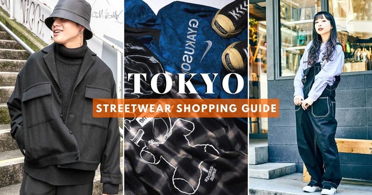

Японский уличный стиль


Одежда:
- Худи
- Футболки
- Платья
- Юбки
- Рюкзаки
- Аксессуары
Топ интернет-магазинов japanese streetwear:
Японская уличная мода уже давно стала уникальным и неповторимым явлением и с каждым годом влияние и популярность её только растёт. От косплея до дизайнерских вещей Yohji Yamamoto на улицах Токио и, в особенности, в самом модном районе столицы Харадзюку можно встретить кого угодно.

Tokyo-streetwear.com

Snobasia.com

Snobasia.com
Популярные бренды одежды:
WTAPS. Название означает «double tap» – двойной выстрел по одной цели. Военная тематика является основной для компании. Все это чаще всего сопровождается камуфляжной расцветкой.

Тетсу Нисияма, он же TET, в начале 90-х основал FPAR – бренд футболок, вдохновленный панком и анархическими движениями. В 1996 году он открыл WTAPS. WTAPS, как и другие японские фирмы одежды, созданные в 1990-е годы, сформировали уличную культуру в Токио. В коллекциях присутствуют брюки карго, куртки M-51, панамы и сумки. Сегодня существует немного брендов, которые с такой готовностью охватывают весь спектр военной одежды, опираясь на историю и сочетая ее с аутентичными методами изготовления вещей.
Comme des Garcons. Авангардный бренд Comme des Garcons, который «побуждает выйти из зоны комфорта».

Бренд Comme des Garcons был основан еще в 1969 году дизайнером Рей Кавакубо. Она всегда выступала против того, чтобы объяснять свой стиль. По сути, Рей противопоставляет себя высокой моде. Ее коллекции носят названия «Bad Taste», «Transcending Gender», «Not Making Clothing» и «MONSTER». Всегда преобладает черный цвет и очень объемный крой, а стиль унисекс не ставит различия между женской и мужской одеждой. После того, как Кавакубо создала новый формат универмагов и открыла Dover Street Market в Лондоне, она решила сделать молодежную линию Play. Это повседневная одежда с узнаваемым логотипом – сердце с глазами. Она не привязана к сезонным релизам, а основными предметами являются футболки, толстовки и аксессуары.
Сукебан. Стиль женских подростковых банд.


В конце 70-х годов благополучию японцев стали угрожать женские подростковые банды, члены которой называли себя Сукебан. Участницы банды занимались грабежом магазинов, сражались с враждебными кланами, пытаясь занять доминирующее положение в криминальной среде Японии. Сегодня субкультура Сукебан уже не ассоциируется с уличными вооруженными бандами – о популярных когда-то женских преступных союзах напоминает только стиль одежды, востребованный японской молодежью. Сукебан предпочитают удлиненные плиссированные юбки, развязанные галстуки, спортивные костюмы и свободные рубашки темных тонов.
| Головные уборы | Верх | Низ | Обувь |
|---|---|---|---|
| Кепки | Футболки | Брюки | Кроссовки |
| Шапки | Худи | Юбки | Туфли |
| Шляпы | Лонгсливы | Джинсы | Кеды |
| Аксессуары | Рубашки | Шорты | Ботинки |
Имя
Ваш номер телефона
Ваш email
Какой стиль одежды вы бы выбрали?
WTAPSComme des Garcons
Сукебан
Почему вы выбрали этот стиль?
